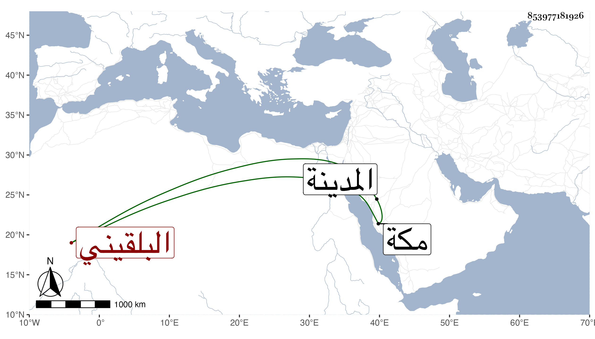

0902Sakhawi.DawLamic.ITO20230111-ara1.EIS1600.853977181926
Biography ID: 853977181926
847
أم الحسن ابنة التقي محمد بن البدر محمد بن السراج عمر بن رسلان البلقيني أخت زينب لأمها وشقيقة فتح الدين محمد وخديجة ، أمهم أم ولد لعم أبيهما الجلال البلقيني . ولدت قريب الثلاثين وثمانمائة ، وتزوجها ابن قوبان من أجناد الحسينية ثم ابن شقطاي ثم سبط شيخنا ودامت تحته سنين واستولدها أولادا ، ثم منصور بن صفى الاستادار فلم تتم عنده شهرا ثم ناصر الدين محمد بن الحاجب ودامت معه حتى مات ، ولم يعش لها ولد ، وقد حجت وجاورت هي واخوتها الثلاثة ومات الذكر بمكة فجاورت الثلاثة بالمدينة أشهرا ، ثم حجت بعد أن أثكلت اخوتها وصارت فريدة في سنة ست وتسعين وجاورت التي تليها ، وتزوج بها في أثنائها وهي هناك أقبردى التماسيحي أمير الراكز وما كان ظنها بعد اثكال أختيها شقيقتها خديجة ثم زينب التزوج ولها عقل وتدبير ومحبة في أهل الخير وتعفف واحتياط غالبا .
